Подборку собрали 24 ноября, прошедшие события скрыты. Свежая афиша — на главной
Будний вечер · данные на 24 ноября
Куда сходить вечером после работы
В будний вечер не хочется ехать через весь город. Здесь 151 короткий план: одна-две точки рядом друг с другом и чек примерно до 3 000 ₽ на человека, 88 из них — в центре. Ниже — 26 вечерних событий в ближайшие будни.
- 151 план
- 26 событий
Короткие планы на вечер 24 из 151
- ГЭС-2 · Дом культуры · м. Кропоткинская
- 1 минута пешкомChima · Фудхолл
Выставки в ГЭС-2, а фудхолл Chima совсем рядом на Болотной — каждый выберет свою кухню.
Открыть план: ГЭС-2 и азиатский ужинПозвать сюда: ГЭС-2 и азиатский ужин
Фото: Юрий Д.К., CC BY 4.0 · Wikimedia Commons
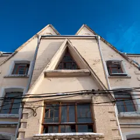
- Поляндрия • Letters · Кофейня в книжном · м. Сухаревская
- 6 минут пешкомСДВиГ · Бар
Выбираете книги и пьёте кофе в книжном на Садовой, а к открытию бара переходите через площадь за коктейлями и закусками. Около пяти минут пешком.
Открыть план: Книжный, кофе и коктейлиПозвать сюда: Книжный, кофе и коктейли
Фото здания: User:NVO, CC BY-SA 3.0 · Wikimedia Commons
- Здание Центросоюза · Модернизм Ле Корбюзье · м. Сретенский бульвар
- 2 минуты пешкомKeep · Гастробар
Единственное здание Корбюзье в России — розовый туф и стекло, а потом ужин при свечах в Keep через дорогу.
Открыть план: Ле Корбюзье на МясницкойПозвать сюда: Ле Корбюзье на Мясницкой
Фото: Ludvig14, CC BY-SA 4.0 · Wikimedia Commons
- Клуб имени Зуева · Конструктивизм · м. Белорусская
- 9 минут пешкомКультурный код · Кафе
Конструктивизм Голосова: вечером стеклянная лестница светится изнутри. Перед этим — кофе в «Культурном коде» на Чаянова.
Открыть план: Стеклянный цилиндр клуба ЗуеваПозвать сюда: Стеклянный цилиндр клуба Зуева
Фото: Guldfisken, CC BY-SA 3.0 · Wikimedia Commons
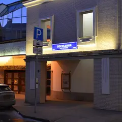
- Школа драматического искусства · Театр · м. Сухаревская
- 6 минут пешкомСДВиГ · Бар
Спектакль, затем пять минут пешком до спрятанного во дворе бара с мягким светом и рамёном. Удобно продолжить разговор о постановке.
Открыть план: Театр на Сретенке и бар-лофтПозвать сюда: Театр на Сретенке и бар-лофт
Фото: Brateevsky, CC BY-SA 4.0 · Wikimedia Commons
- Чистые пруды · Бульвар и пруд · м. Чистые пруды
- 5 минут пешкомОстров Пасхи · Кафе
Круг по бульвару у пруда и пять минут до необычного кафе с подземным залом. После прогулки на холоде приятно сесть в тепле и разговориться.
Открыть план: Чистые пруды и кофе в катакомбахПозвать сюда: Чистые пруды и кофе в катакомбах
Фото: SergeyStepykin, CC BY-SA 3.0 · Wikimedia Commons
- Краснопресненские бани · Баня и хамам · м. Улица 1905 года
- 13 минут пешкомРаковарня · Раки и караоке
Финская сауна, хамам и бассейн в Краснопресненских банях, а потом через Трёхгорку в «Раковарню» — раки, морепродукты и караоке до шести утра.
Открыть план: Баня на Пресне и ракиПозвать сюда: Баня на Пресне и раки
Фото: Ludvig14, CC BY-SA 4.0 · Wikimedia Commons
- Парк Горького · Парк · м. Октябрьская
- 11 минут пешкомSUBSTANCE · Бильярд-бистро
Прогулка по набережной и пара партий в бильярд-бистро SUBSTANCE.
Открыть план: Бильярд в Парке ГорькогоПозвать сюда: Бильярд в Парке Горького
Фото: A.Savin, Free Art License · Wikimedia Commons
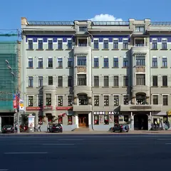
- Музей Булгакова · Музей · м. Маяковская
- 8 минут пешкомЗойка · Ресторан
«Нехорошая квартира» №50 в музее Булгакова (по четвергам открыт до 21:00), а потом ужин в «Зойкиной квартире» на Патриарших, где остановилось время.
Открыть план: Булгаковский вечерПозвать сюда: Булгаковский вечер
Фото: NVO, CC BY-SA 3.0 · Wikimedia Commons
- Чистые пруды · Бульвар и пруд · м. Чистые пруды
- 12 минут пешкомKeep · Гастробар
Круг по Чистым прудам в сумерках, потом свечи и росписи с ангелами в готическом гастробаре Keep во дворах Мясницкой.
Открыть план: Бульвары и готический ужинПозвать сюда: Бульвары и готический ужин
Фото: SergeyStepykin, CC BY-SA 3.0 · Wikimedia Commons
- Дом Гоголя · Музей · м. Арбатская
- 4 минуты пешкомХудожественный · Кинотеатр
Дом, где Гоголь сжёг второй том «Мёртвых душ», и вечерний сеанс в старейшем кинотеатре Москвы.
Открыть план: Вий, Гоголь и киноПозвать сюда: Вий, Гоголь и кино
Фото: Shakko, CC BY-SA 4.0 · Wikimedia Commons
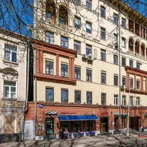
- Винный базар · Винный бар · м. Трубная
- 10 минут пешкомSEMENOV · Караоке
Дегустация в «Винном базаре», а потом караоке с танцполом и кухней в 10 минутах пешком.
Открыть план: Вино и песниПозвать сюда: Вино и песни
Фото здания: Mike1979 Russia, CC BY-SA 3.0 · Wikimedia Commons
- Парк «Зарядье» · Парк · м. Китай-город
- 9 минут пешкомBrasserie Lambic · Пивной ресторан
Прогулка по Парящему мосту, потом мидии и двести сортов пива в брассери за десять минут.
Открыть план: Зарядье и бельгийское пивоПозвать сюда: Зарядье и бельгийское пиво
Фото: Alina Vozna, CC BY-SA 4.0 · Wikimedia Commons
- Московский планетарий · Планетарий · м. Баррикадная
- 2 минуты пешкомBlinkGame · Компьютерный клуб
Звёздный зал под огромным куполом планетария, а через две минуты лаунж с четырьмя PS5: сыграть вдвоём на желание.
Открыть план: Звёзды и PS5 на двоихПозвать сюда: Звёзды и PS5 на двоих
Фото: A.Savin, Free Art License · Wikimedia Commons
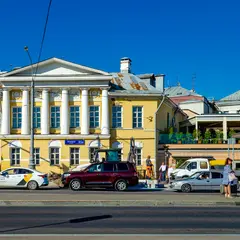
- KGallery Bookcafe · Книжный и кофейня в усадьбе · м. Китай-город
- 1 минута пешкомКабаре «Шум» · Кабаре
Кофе и альбомы по искусству в KGallery, а потом там же, в усадьбе Филипповых, — петербургское кабаре «Шум» с чтениями под баян и спектаклями.
Открыть план: Кабаре и книжный в усадьбеПозвать сюда: Кабаре и книжный в усадьбе
Фото: Никонико962, CC BY-SA 4.0 · Wikimedia Commons
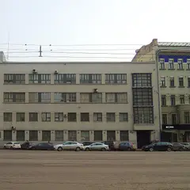
- 128bpm · Студия танцев · м. Маяковская
- 2 минуты пешкомKaraoke Lights · Караоке
Разовое занятие high heels для новичков — и сразу в караоке-бар на Садовом, буквально в двух минутах.
Открыть план: Каблуки и караокеПозвать сюда: Каблуки и караоке
Фото здания: Shakko, CC BY-SA 4.0 · Wikimedia Commons
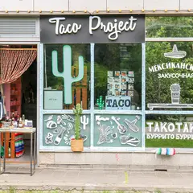
- ROKU · Компьютерный клуб · м. Новослободская
- 3 минуты пешкомTaco Project · Мексиканское кафе
Пара часов в премиальном кибер-лаундже у Новослободской с топовым железом и VIP-комнатами, а через три минуты тако с открытой кухни в Taco Project.
Открыть план: Катка в ROKU и такоПозвать сюда: Катка в ROKU и тако
Фото: Stolbovsky, CC BY-SA 3.0 · Wikimedia Commons
- Клаустрофобия · Квест · м. Чистые пруды
- 9 минут пешкомKeep · Гастробар
Час в квест-комнате у Чистых прудов (комнату, с актёрами или без, выбираете на сайте), а потом готический гастробар со свечами на Мясницкой — в десяти минутах пешком. По пятницам и субботам там танцы и DJ.
Открыть план: Квест и готический барПозвать сюда: Квест и готический бар
Фото здания: Никонико962, CC BY-SA 4.0 · Wikimedia Commons
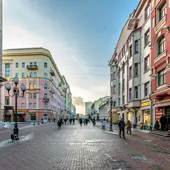
- Rizz Cyber & Lounge · Компьютерный клуб · м. Смоленская
- 2 минуты пешкомАрбат · Пешеходная улица
Катка в переулках у Смоленской, а потом проветрить голову на Старом Арбате — две минуты пешком.
Открыть план: Кибер-лаундж и ночной АрбатПозвать сюда: Кибер-лаундж и ночной Арбат
Фото: Alex 'Florstein' Fedorov, CC BY-SA 4.0 · Wikimedia Commons
- WINSTRIKE Arena · Компьютерный клуб · киберарена · м. Лубянка
- 1 минута пешкомAnvio VR · VR-арена
WINSTRIKE Arena и Anvio VR — в одном здании на Лубянке: сначала катка за ПК, потом рубилово в шлемах.
Открыть план: Киберарена и VR в одном домеПозвать сюда: Киберарена и VR в одном доме
Фото здания: Никонико962, CC BY-SA 4.0 · Wikimedia Commons
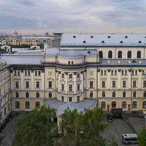
- Московская консерватория · Концертный зал · м. Охотный ряд
- 1 минута пешкомUgolёk · Ресторан
Живая классика в Консерватории и ужин через дорогу — там всё готовят в дровяных печах.
Открыть план: Концерт и ужин на дровахПозвать сюда: Концерт и ужин на дровах
Фото: A.Savin, Free Art License · Wikimedia Commons
- Малый театр · Театр · м. Театральная
- 3 минуты пешкомНаука и жизнь · Круглосуточный бар
Большая классика в Малом театре, а в трёх минутах — круглосуточный бар «Наука и жизнь»: авторские коктейли и настолки — торопиться некуда.
Открыть план: Малый театр и бар без закрытияПозвать сюда: Малый театр и бар без закрытия
Фото: Никонико962, CC BY-SA 4.0 · Wikimedia Commons
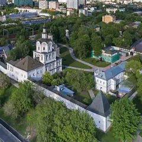
- Андроников монастырь · Музей и монастырь · м. Площадь Ильича
- 6 минут пешкомСекрет · Приватный кинотеатр
Прогулка вокруг белых стен Андроникова монастыря, а потом приватный кинотеатр «Секрет»: свой зал с большим диваном, любой фильм и работа до шести утра.
Открыть план: Монастырь и кинозал только для васПозвать сюда: Монастырь и кинозал только для вас
Фото: A.Savin, Free Art License · Wikimedia Commons
- Патриарший мост · Пешеходный мост · м. Кропоткинская
- 4 минуты пешкомСыроварня · Ресторан с сыроварней
Вид на Кремль с Патриаршего моста и ужин на «Красном Октябре», где сыр варят при гостях.
Открыть план: Мост и сыроварняПозвать сюда: Мост и сыроварня
Фото: NVO, общественное достояние · Wikimedia Commons


Вечерние события в будни 12 из 26
Театр Наций · м. Пушкинская · от 1 500 ₽ · 18+
Робер Лепаж ставит Булгакова с технологичными чудесами на сцене, Мастера играет Евгений Миронов. Только четыре вечера подряд в конце ноября, начало в 18:00.
Подробнее: Мастер и МаргаритаПозвать сюда: Мастер и МаргаритаБилеты : Мастер и Маргарита (страница с билетами, откроется в новой вкладке)
Фото: Mike1979 Russia, CC BY-SA 3.0 · Wikimedia Commons
Театр Моссовета, Основная сцена · м. Маяковская · 500–5 000 ₽ · 12+
Музыкальный спектакль по рок-опере Уэббера и Райса идёт в Театре Моссовета с 1990 года — один из самых долгоживущих хитов Москвы. 2,5 часа с антрактом.
Подробнее: Иисус Христос — суперзвездаПозвать сюда: Иисус Христос — суперзвездаБилеты : Иисус Христос — суперзвезда (страница с билетами, откроется в новой вкладке)
Театр «Практика» · м. Маяковская · 18+
Музыкальный док Юрия Печенежского о разгроме выставки в Манеже 1962 года: «Голубой огонёк», советские песни и газетные цитаты. Полтора часа.
Подробнее: Кровоизлияние в МОСХПозвать сюда: Кровоизлияние в МОСХБилеты : Кровоизлияние в МОСХ (страница с билетами, откроется в новой вкладке)
Фото: Valera N. Trubin, CC BY-SA 4.0 · Wikimedia Commons
Театр на Бронной, Основная сцена · м. Тверская · от 12 000 ₽ · 18+
Пьеса Набокова в постановке Богомолова: семья ждёт опасного гостя, и страх постепенно превращается в гротеск. Билеты разбирают быстро.
Подробнее: СобытиеПозвать сюда: СобытиеБилеты : Событие (страница с билетами, откроется в новой вкладке)
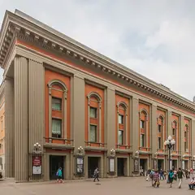
Театр Вахтангова, Основная сцена · м. Смоленская · от 2 000 ₽ · 16+
Новая постановка Анатолия Шульева в Вахтанговском, где играют Виктор Сухоруков и Ирина Купченко. Повод увидеть больших актёров в нескольких рядах от себя.
Подробнее: Блеск и пепелПозвать сюда: Блеск и пепелБилеты : Блеск и пепел (страница с билетами, откроется в новой вкладке)
Фото: A.Savin, Free Art License · Wikimedia Commons
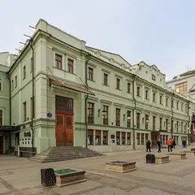
МХТ имени Чехова, Основная сцена · м. Охотный ряд · 1 000–35 000 ₽ · 18+
Премьера Андрея Гончарова: Шекспир как семейная драма о ревности и борьбе за мать. Принц — Юра Борисов, с 25 ноября — Оливер Мара. 1 ч 40 мин.
Подробнее: ГамлетПозвать сюда: ГамлетБилеты : Гамлет (страница с билетами, откроется в новой вкладке)
Фото: A.Savin, Free Art License · Wikimedia Commons
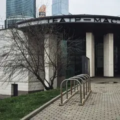
Мастерская Петра Фоменко, Новая сцена · м. Москва-Сити
Премьера Ивана Поповски по Достоевскому: фантасмагория о Фоме Опискине, подмявшем под себя целое имение. Больше четырёх часов с антрактом.
Подробнее: Село Степанчиково и его обитателиПозвать сюда: Село Степанчиково и его обитателиБилеты : Село Степанчиково и его обитатели (страница с билетами, откроется в новой вкладке)
Фото: Gennady Grachev from Moscow, Russia, CC BY 2.0 · Wikimedia Commons
Джаз-клуб Игоря Бутмана на Таганке · м. Таганская · 2 000–5 000 ₽ · 6+
Долина выходит с биг-бэндом Сергея Долженкова и своими студентами-вокалистами. Джазовые хиты за столиком с ужином в клубе на Таганке.
Подробнее: Лариса Долина и её лучшие студентыПозвать сюда: Лариса Долина и её лучшие студентыБилеты : Лариса Долина и её лучшие студенты (страница с билетами, откроется в новой вкладке)
РЖД Арена · м. Черкизовская
Кубковый матч на «РЖД Арене»: «Локомотив» — «Ростов». Билеты на кубок обычно проще достать, чем на чемпионат, — удобно сходить компанией.
Подробнее: Локомотив — РостовПозвать сюда: Локомотив — РостовБилеты : Локомотив — Ростов (страница с билетами, откроется в новой вкладке)
STILL, Большой зал · м. Чистые пруды · 18+
Сольник Вани Усовича в рамках мирового тура. Клубный зал небольшой — комика, которого смотрят миллионы на YouTube, видно совсем близко.
Подробнее: Ваня Усович. Сольный концертПозвать сюда: Ваня Усович. Сольный концертБилеты : Ваня Усович. Сольный концерт (страница с билетами, откроется в новой вкладке)
Театр на Мельникова · м. Дубровка · от 700 ₽ · 6+
Мюзикл о мечтателе, придумавшем большое шоу: живой вокал, цирковые номера, костюмы и грим. Лёгкий вечер для пары или подруг.
Подробнее: Величайший шоуменПозвать сюда: Величайший шоуменБилеты : Величайший шоумен (страница с билетами, откроется в новой вкладке)
Государственный музей А. С. Пушкина · м. Кропоткинская · 2 400–3 000 ₽ · 12+
Мелодии из «Иронии судьбы» и «Семнадцати мгновений весны» в аранжировке для органа, саксофона и фортепиано. Свечи и старинная усадьба на Пречистенке.
Подробнее: Звуки и свечи. Музыка Микаэла ТаривердиеваПозвать сюда: Звуки и свечи. Музыка Микаэла ТаривердиеваБилеты : Звуки и свечи. Музыка Микаэла Таривердиева (страница с билетами, откроется в новой вкладке)
Фото: NVO, CC BY-SA 2.5 · Wikimedia Commons


Как позвать
- Выбери план, место или событие — в карточке адрес, цены и маршрут в Яндекс Картах.
- Нажми «Позвать сюда» — соберётся приглашение-игра для свидания или голосование для компании.
- Отправь ссылку в любой мессенджер: тебе ответят, а компания отметит, куда и когда может. Бесплатно и без регистрации.